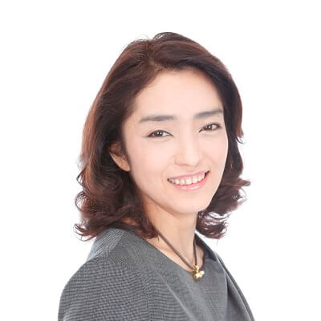

代表挨拶
佐々木裕子 株式会社チェンジウェーブ代表

経歴：
東京大学法学部卒、日本銀行を経て、マッキンゼーアンドカンパニー入社。シカゴオフィス勤務の後、同社アソシエイトパートナーとして8年間強の間、金融・小売・通信・公的機関など、数多くの企業の経営変革プロジェクトに従事。退社後、株式会社チェンジウェーブを創立し、変革実現のサポートと変革リーダー育成に携わる。傍ら、自らの出産と同時に、子どもの可能性を引き出す託児サービス事業“creche bebe”を立ち上げる。
主な著書に、「21世紀を生き抜く3＋1の力」「実践型クリティカルシンキング」「数字で考える力」（以上、ディスカヴァー・トゥエンティワン）がある。
山育への想い：
これからの時代は、めまぐるしく変化し、多様でこれまでにない生き方を求められる世の中になります。子ども達はそのような世界を生きていきます。
そんな中で、純粋な想いを持ち、自分の個性や価値観を大事にし、「自分らしく生きる力」を持っていることは、本当に大切なこと。それは、突き詰めていくと多様な生き方を実現する力。すなわち、自分自身に正直であり続け、自分自身で考え抜く力。 既存の枠組みにとらわれず、それを乗り越えていく力。「変革屋」のChangeWAVEがcreche bebeを始めたのは、私自身が子どもを授かったこともありましたが、子どもを育てていくことが、全ての人にとり、たくさんの多様な生き方を創る新しい未来の創出そのものでありたいと考えたからです。激動の時代でも『逞しく』そして『自分らしくしなやかに』生きることができる人に成長するよう、子ども達やそのご家族の可能性を最大限に引き出す機会をお届けしたいと思ったのです。大自然に触れ、大人も子どもも感覚を磨くことにより、時代の変化を素早く感じ取る感覚を養い、感動体験を家族で共有し、お互いの成長を感じ・認めることにより、家族としての成長と絆を実感し、安心して自分の芯となる『ぶれない核』と『自尊心』を育む。そして、継続的プログラムを辿ることで、これからの激動の時代を『生き抜く力』を培うことを目的として『山育×山行く』を創りました。
この想いを実現するのに、『山のエキスパート』である登山家 山田淳氏の協力を得て、登山経験のないご家族でも、登山用具や山の知識面での心配なしに手軽に、安全に、週末の登山を楽しめるようにプログラムしています。